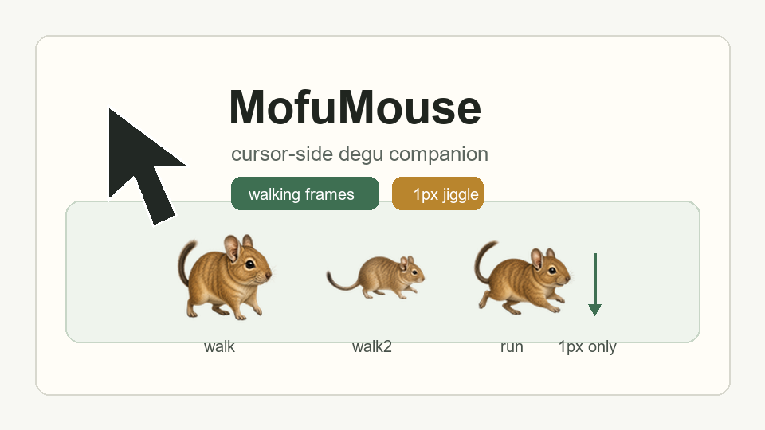

カーソル横で追従
移動方向に合わせて左右へ回り込み、邪魔になりにくい位置で小さく待機します。
カーソルの横に小さなデグーがついてきて、歩行フレームや待機しぐさで作業中にそっと動く Windows 用デスクトップアシスタントです。 ボタン操作やカーソル移動はせず、1px 移動だけを必要な時に使えます。
多くのPCでは x64 を選んでください。古い32bit Windows の場合だけ x86 を使います。 ZIPを展開して `MofuMouse.exe` を起動します。

画像は開発中の見た目です。デグーの歩行フレームや毛色別のしぐさは順次追加しています。
移動方向に合わせて左右へ回り込み、邪魔になりにくい位置で小さく待機します。
全6毛色の walk / walk2 / run フレームで、カーソル移動中の足運びを見せます。
1px移動、クイックキー、クイックスクロール、起動時開始をトレイから切り替えられます。
MofuMouse is a small Windows desktop assistant with a degu companion beside your cursor. It focuses on cursor-side walking animation, small idle gestures, optional 1px mouse movement, and tray-based shortcuts without moving the cursor to buttons or auto-clicking.